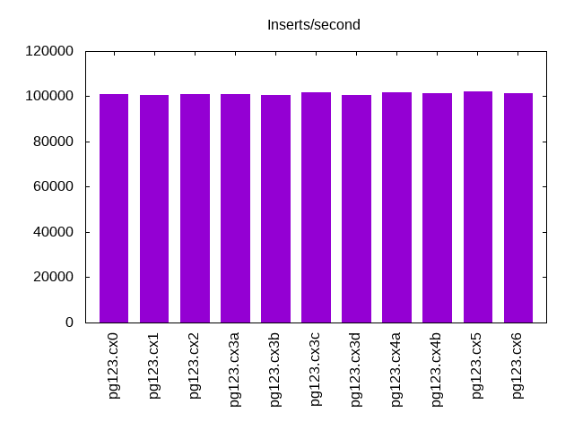
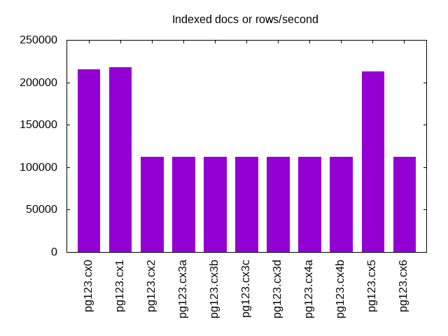
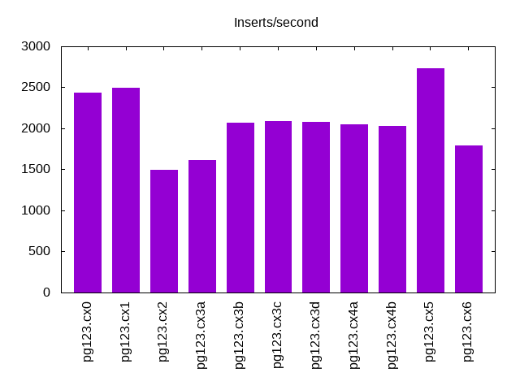
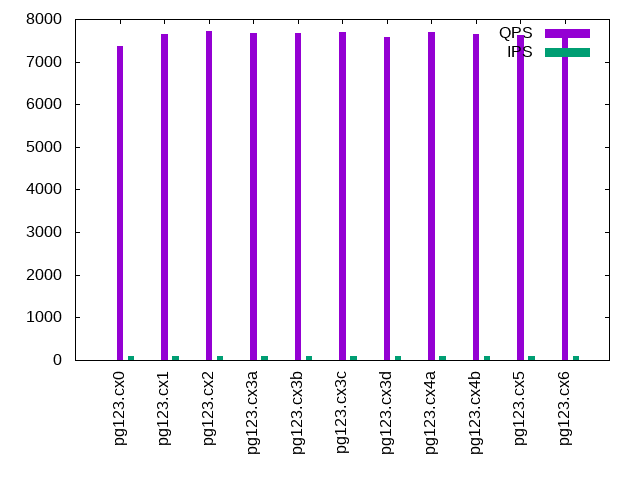
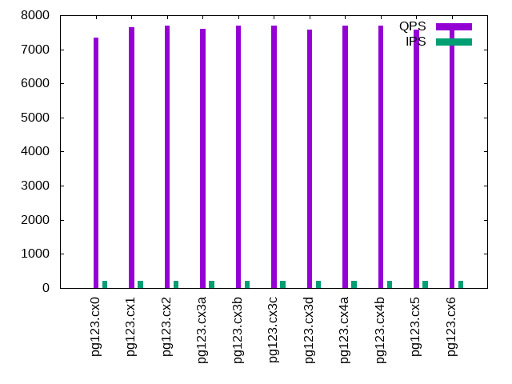
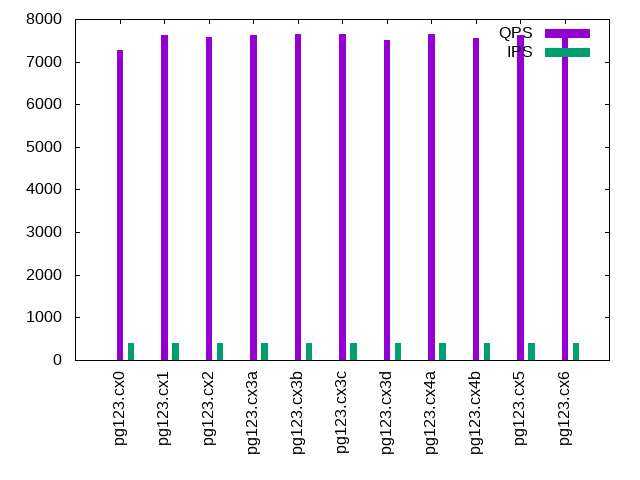
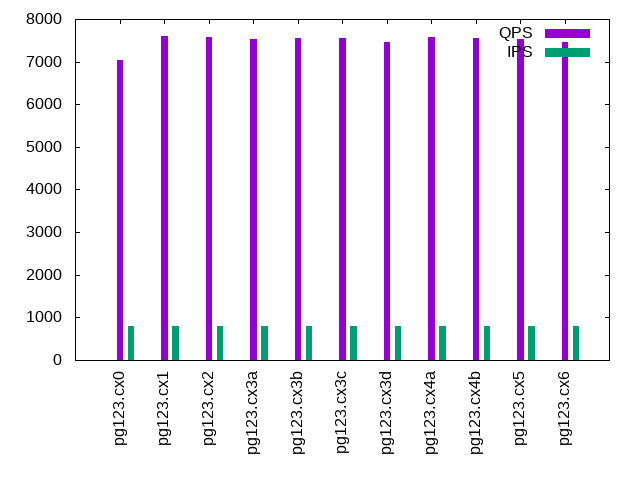
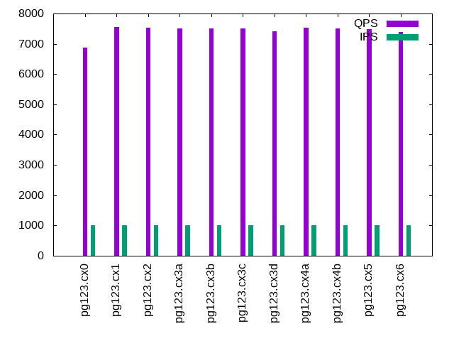

This is a report for the insert benchmark with 500M docs and 1 client(s). It is generated by scripts (bash, awk, sed) and Tufte might not be impressed. An overview of the insert benchmark is here and a short update is here. Below, by DBMS, I mean DBMS+version.config. An example is my8020.c10b40 where my means MySQL, 8020 is version 8.0.20 and c10b40 is the name for the configuration file.
The test server is described here. Clients and the DBMS shared the same host running Ubuntu 18.04.5. All tests used Postgres 12.3. The configurations for Postgres are here.
The numbers are inserts/s for l.i0 and l.i1, indexed docs (or rows) /s for l.x and queries/s for q*.2. The values are the average rate over the entire test for inserts (IPS) and queries (QPS). The range of values for IPS and QPS is split into 3 parts: bottom 25%, middle 50%, top 25%. Values in the bottom 25% have a red background, values in the top 25% have a green background and values in the middle have no color. A gray background is used for values that can be ignored because the DBMS did not sustain the target insert rate. Red backgrounds are not used when the minimum value is within 80% of the max value.
| dbms | l.i0 | l.x | l.i1 | q100.2 | q200.2 | q400.2 | q600.2 | q800.2 | q1000.2 |
|---|---|---|---|---|---|---|---|---|---|
| pg123.cx0 | 100827 | 215189 | 2435 | 7366 | 7339 | 7273 | 7146 | 7034 | 6864 |
| pg123.cx1 | 100624 | 218003 | 2496 | 7654 | 7651 | 7636 | 7601 | 7604 | 7554 |
| pg123.cx2 | 101153 | 112458 | 1495 | 7709 | 7693 | 7583 | 7599 | 7588 | 7524 |
| pg123.cx3a | 101092 | 111929 | 1615 | 7681 | 7610 | 7615 | 7526 | 7529 | 7502 |
| pg123.cx3b | 100604 | 112105 | 2071 | 7666 | 7686 | 7646 | 7580 | 7558 | 7504 |
| pg123.cx3c | 101709 | 112483 | 2093 | 7690 | 7684 | 7641 | 7588 | 7562 | 7517 |
| pg123.cx3d | 100402 | 112004 | 2084 | 7577 | 7589 | 7505 | 7471 | 7463 | 7402 |
| pg123.cx4a | 101895 | 111804 | 2048 | 7690 | 7696 | 7652 | 7565 | 7581 | 7527 |
| pg123.cx4b | 101256 | 112055 | 2033 | 7658 | 7703 | 7562 | 7589 | 7548 | 7505 |
| pg123.cx5 | 101999 | 212718 | 2737 | 7629 | 7583 | 7624 | 7592 | 7542 | 7477 |
| pg123.cx6 | 101543 | 112458 | 1796 | 7680 | 7645 | 7581 | 7505 | 7450 | 7383 |
This lists the average rate of inserts/s for the tests that do inserts concurrent with queries. For such tests the query rate is listed in the table above. The read+write tests are setup so that the insert rate should match the target rate every second. Cells that are not at least 95% of the target have a red background to indicate a failure to satisfy the target.
| dbms | q100.2 | q200.2 | q400.2 | q600.2 | q800.2 | q1000.2 |
|---|---|---|---|---|---|---|
| pg123.cx0 | 100 | 200 | 399 | 599 | 799 | 998 |
| pg123.cx1 | 100 | 200 | 399 | 599 | 799 | 998 |
| pg123.cx2 | 100 | 200 | 399 | 599 | 799 | 999 |
| pg123.cx3a | 100 | 200 | 399 | 599 | 799 | 999 |
| pg123.cx3b | 100 | 200 | 399 | 599 | 799 | 999 |
| pg123.cx3c | 100 | 200 | 399 | 599 | 799 | 999 |
| pg123.cx3d | 100 | 200 | 399 | 599 | 799 | 998 |
| pg123.cx4a | 100 | 200 | 400 | 599 | 799 | 998 |
| pg123.cx4b | 100 | 200 | 399 | 599 | 799 | 998 |
| pg123.cx5 | 100 | 200 | 399 | 599 | 799 | 998 |
| pg123.cx6 | 100 | 200 | 399 | 599 | 799 | 998 |
| target | 100 | 200 | 400 | 600 | 800 | 1000 |
l.i0: load without secondary indexes. Graphs for performance per 1-second interval are here.
Average throughput:
Insert response time histogram: each cell has the percentage of responses that take <= the time in the header and max is the max response time in seconds. For the max column values in the top 25% of the range have a red background and in the bottom 25% of the range have a green background. The red background is not used when the min value is within 80% of the max value.
| dbms | 256us | 1ms | 4ms | 16ms | 64ms | 256ms | 1s | 4s | 16s | gt | max |
|---|---|---|---|---|---|---|---|---|---|---|---|
| pg123.cx0 | 86.668 | 13.324 | 0.003 | 0.004 | 0.001 | nonzero | 0.303 | ||||
| pg123.cx1 | 84.275 | 15.717 | 0.006 | 0.002 | 0.036 | ||||||
| pg123.cx2 | 87.218 | 12.774 | 0.004 | 0.004 | nonzero | 0.161 | |||||
| pg123.cx3a | 86.867 | 13.128 | 0.003 | 0.002 | nonzero | 0.203 | |||||
| pg123.cx3b | 84.646 | 15.349 | 0.004 | nonzero | 0.036 | ||||||
| pg123.cx3c | 88.032 | 11.961 | 0.006 | nonzero | 0.036 | ||||||
| pg123.cx3d | 84.692 | 15.303 | 0.005 | nonzero | 0.036 | ||||||
| pg123.cx4a | 88.723 | 11.271 | 0.006 | nonzero | 0.036 | ||||||
| pg123.cx4b | 86.229 | 13.765 | 0.006 | nonzero | 0.036 | ||||||
| pg123.cx5 | 88.838 | 11.155 | 0.006 | nonzero | nonzero | 0.250 | |||||
| pg123.cx6 | 86.817 | 13.181 | 0.002 | nonzero | 0.026 |
Performance metrics for the DBMS listed above. Some are normalized by throughput, others are not. Legend for results is here.
ips qps rps rkbps wkbps rpq rkbpq wkbpi csps cpups cspq cpupq dbgb1 dbgb2 rss maxop p50 p99 tag 100827 0 29 241 40784 0.000 0.002 0.404 12206 45.8 0.121 18 47.8 48.9 0.0 0.303 101289 84976 pg123.cx0 100624 0 42 339 48169 0.000 0.003 0.479 12126 45.7 0.121 18 47.8 48.9 0.0 0.036 100790 96294 pg123.cx1 101153 0 41 332 47781 0.000 0.003 0.472 12149 46.7 0.120 18 47.8 48.9 0.0 0.161 101488 94393 pg123.cx2 101092 0 41 333 46965 0.000 0.003 0.465 12111 46.6 0.120 18 47.8 49.9 0.0 0.203 101388 96295 pg123.cx3a 100604 0 42 342 48383 0.000 0.003 0.481 12020 46.3 0.119 18 47.8 55.4 0.0 0.036 100789 96494 pg123.cx3b 101709 0 43 350 48219 0.000 0.003 0.474 12133 46.8 0.119 18 47.8 55.5 0.0 0.036 101857 97893 pg123.cx3c 100402 0 42 341 48044 0.000 0.003 0.479 11998 46.2 0.120 18 47.8 55.4 0.0 0.036 100588 96031 pg123.cx3d 101895 0 43 352 48946 0.000 0.003 0.480 12158 46.9 0.119 18 47.8 55.5 0.0 0.036 101988 98329 pg123.cx4a 101256 0 43 347 48262 0.000 0.003 0.477 12135 46.8 0.120 18 47.8 55.5 0.0 0.036 101389 97648 pg123.cx4b 101999 0 43 352 48965 0.000 0.003 0.480 12189 46.5 0.119 18 47.8 55.7 0.0 0.250 102088 99292 pg123.cx5 101543 0 59 485 48642 0.001 0.005 0.479 12178 46.8 0.120 18 47.8 55.6 0.0 0.026 101688 98695 pg123.cx6
l.x: create secondary indexes.
Average throughput:
Performance metrics for the DBMS listed above. Some are normalized by throughput, others are not. Legend for results is here.
ips qps rps rkbps wkbps rpq rkbpq wkbpi csps cpups cspq cpupq dbgb1 dbgb2 rss maxop p50 p99 tag 215189 0 632 73823 134209 0.003 0.343 0.624 662 22.2 0.003 4 91.9 93.0 0.0 0.002 NA NA pg123.cx0 218003 0 562 69782 133731 0.003 0.320 0.613 776 22.8 0.004 4 91.9 93.0 0.0 0.005 NA NA pg123.cx1 112458 0 289 35990 66003 0.003 0.320 0.587 326 24.1 0.003 9 91.9 93.0 0.0 0.006 NA NA pg123.cx2 111929 0 288 35842 63523 0.003 0.320 0.568 335 24.2 0.003 9 91.9 93.9 0.0 0.003 NA NA pg123.cx3a 112105 0 288 35870 65963 0.003 0.320 0.588 349 24.1 0.003 9 91.9 97.7 0.0 0.008 NA NA pg123.cx3b 112483 0 290 36018 64817 0.003 0.320 0.576 354 24.1 0.003 9 91.9 97.5 0.0 0.008 NA NA pg123.cx3c 112004 0 288 35854 64550 0.003 0.320 0.576 348 24.1 0.003 9 91.9 97.6 0.0 0.003 NA NA pg123.cx3d 111804 0 288 35822 65856 0.003 0.320 0.589 350 24.1 0.003 9 91.9 97.7 0.0 0.006 NA NA pg123.cx4a 112055 0 288 35865 66168 0.003 0.320 0.590 376 24.1 0.003 9 91.9 97.7 0.0 0.008 NA NA pg123.cx4b 212718 0 547 68130 149329 0.003 0.320 0.702 850 22.7 0.004 4 91.9 110.1 0.0 0.012 NA NA pg123.cx5 112458 0 308 38512 66267 0.003 0.342 0.589 342 24.0 0.003 9 91.9 97.7 0.0 0.003 NA NA pg123.cx6
l.i1: continue load after secondary indexes created. Graphs for performance per 1-second interval are here.
Average throughput:
Insert response time histogram: each cell has the percentage of responses that take <= the time in the header and max is the max response time in seconds. For the max column values in the top 25% of the range have a red background and in the bottom 25% of the range have a green background. The red background is not used when the min value is within 80% of the max value.
| dbms | 256us | 1ms | 4ms | 16ms | 64ms | 256ms | 1s | 4s | 16s | gt | max |
|---|---|---|---|---|---|---|---|---|---|---|---|
| pg123.cx0 | 39.245 | 58.819 | 1.934 | 0.002 | 0.274 | ||||||
| pg123.cx1 | 30.941 | 68.919 | 0.139 | 0.122 | |||||||
| pg123.cx2 | 98.976 | 1.024 | 0.198 | ||||||||
| pg123.cx3a | 99.248 | 0.752 | 0.205 | ||||||||
| pg123.cx3b | 8.918 | 90.563 | 0.519 | 0.170 | |||||||
| pg123.cx3c | 10.872 | 88.584 | 0.544 | 0.001 | 0.281 | ||||||
| pg123.cx3d | 9.931 | 89.540 | 0.529 | 0.001 | 0.301 | ||||||
| pg123.cx4a | 9.158 | 90.358 | 0.485 | 0.160 | |||||||
| pg123.cx4b | 7.875 | 91.707 | 0.418 | 0.156 | |||||||
| pg123.cx5 | 39.611 | 60.357 | 0.033 | 0.126 | |||||||
| pg123.cx6 | 2.806 | 96.534 | 0.660 | 0.194 |
Performance metrics for the DBMS listed above. Some are normalized by throughput, others are not. Legend for results is here.
ips qps rps rkbps wkbps rpq rkbpq wkbpi csps cpups cspq cpupq dbgb1 dbgb2 rss maxop p50 p99 tag 2435 0 3078 31317 120133 1.264 12.862 49.340 12926 16.3 5.309 268 93.6 94.7 0.0 0.274 2697 649 pg123.cx0 2496 0 3331 27481 109271 1.334 11.009 43.775 16085 18.4 6.444 295 93.6 94.7 0.0 0.122 2497 1848 pg123.cx1 1495 0 1994 16459 57669 1.334 11.010 38.577 5141 19.3 3.439 516 93.6 94.7 0.0 0.198 1449 1049 pg123.cx2 1615 0 2155 17567 59542 1.334 10.876 36.863 5484 19.0 3.395 471 93.6 95.7 0.0 0.205 1549 1099 pg123.cx3a 2071 0 2762 22765 58075 1.334 10.993 28.045 6874 18.0 3.319 348 93.6 103.7 0.0 0.170 2048 1149 pg123.cx3b 2093 0 2788 22972 54938 1.332 10.976 26.250 7047 18.0 3.367 344 93.6 104.5 0.0 0.281 2048 1049 pg123.cx3c 2084 0 2776 22873 60302 1.332 10.977 28.940 7029 18.0 3.373 346 93.6 104.6 0.0 0.301 2048 1099 pg123.cx3d 2048 0 2736 22520 55811 1.336 10.996 27.253 7034 18.0 3.435 352 93.6 104.2 0.0 0.160 2098 1049 pg123.cx4a 2033 0 2718 22366 59178 1.337 11.002 29.110 7025 18.0 3.456 354 93.6 104.1 0.0 0.156 2048 1099 pg123.cx4b 2737 0 3657 30022 81630 1.336 10.967 29.820 10751 21.6 3.927 316 93.6 111.8 0.0 0.126 2747 1548 pg123.cx5 1796 0 2733 25184 59114 1.522 14.023 32.916 7045 18.0 3.923 401 93.6 102.9 0.0 0.194 1798 1049 pg123.cx6
q100.2: range queries with 100 insert/s per client, 2nd loop. Graphs for performance per 1-second interval are here.
Average throughput:
Query response time histogram: each cell has the percentage of responses that take <= the time in the header and max is the max response time in seconds. For max values in the top 25% of the range have a red background and in the bottom 25% of the range have a green background. The red background is not used when the min value is within 80% of the max value.
| dbms | 256us | 1ms | 4ms | 16ms | 64ms | 256ms | 1s | 4s | 16s | gt | max |
|---|---|---|---|---|---|---|---|---|---|---|---|
| pg123.cx0 | 99.977 | 0.023 | nonzero | nonzero | 0.011 | ||||||
| pg123.cx1 | 99.986 | 0.014 | nonzero | nonzero | 0.011 | ||||||
| pg123.cx2 | 99.987 | 0.013 | nonzero | nonzero | 0.004 | ||||||
| pg123.cx3a | 99.987 | 0.013 | nonzero | nonzero | 0.007 | ||||||
| pg123.cx3b | 99.987 | 0.013 | nonzero | nonzero | 0.004 | ||||||
| pg123.cx3c | 99.987 | 0.012 | nonzero | nonzero | 0.007 | ||||||
| pg123.cx3d | 99.984 | 0.015 | nonzero | nonzero | 0.007 | ||||||
| pg123.cx4a | 99.988 | 0.012 | nonzero | 0.003 | |||||||
| pg123.cx4b | 99.987 | 0.013 | nonzero | nonzero | 0.006 | ||||||
| pg123.cx5 | 99.985 | 0.014 | nonzero | nonzero | 0.014 | ||||||
| pg123.cx6 | 99.987 | 0.013 | nonzero | nonzero | 0.009 |
Insert response time histogram: each cell has the percentage of responses that take <= the time in the header and max is the max response time in seconds. For max values in the top 25% of the range have a red background and in the bottom 25% of the range have a green background. The red background is not used when the min value is within 80% of the max value.
| dbms | 256us | 1ms | 4ms | 16ms | 64ms | 256ms | 1s | 4s | 16s | gt | max |
|---|---|---|---|---|---|---|---|---|---|---|---|
| pg123.cx0 | 83.361 | 16.639 | 0.031 | ||||||||
| pg123.cx1 | 85.833 | 14.167 | 0.031 | ||||||||
| pg123.cx2 | 100.000 | 0.052 | |||||||||
| pg123.cx3a | 100.000 | 0.052 | |||||||||
| pg123.cx3b | 100.000 | 0.052 | |||||||||
| pg123.cx3c | 100.000 | 0.051 | |||||||||
| pg123.cx3d | 100.000 | 0.053 | |||||||||
| pg123.cx4a | 100.000 | 0.052 | |||||||||
| pg123.cx4b | 100.000 | 0.052 | |||||||||
| pg123.cx5 | 84.722 | 15.278 | 0.025 | ||||||||
| pg123.cx6 | 100.000 | 0.053 |
Performance metrics for the DBMS listed above. Some are normalized by throughput, others are not. Legend for results is here.
ips qps rps rkbps wkbps rpq rkbpq wkbpi csps cpups cspq cpupq dbgb1 dbgb2 rss maxop p50 p99 tag 100 7366 166 1419 4522 0.022 0.193 45.312 28676 25.3 3.893 137 93.7 94.7 0.0 0.011 7368 7272 pg123.cx0 100 7654 128 1053 4346 0.017 0.138 43.547 29725 25.2 3.883 132 93.7 94.7 0.0 0.011 7656 7544 pg123.cx1 100 7709 128 1053 3995 0.017 0.137 40.026 29942 26.7 3.884 139 93.7 94.5 0.0 0.004 7719 7608 pg123.cx2 100 7681 128 1048 4256 0.017 0.136 42.648 29834 26.8 3.884 140 93.7 94.9 0.0 0.007 7687 7560 pg123.cx3a 100 7666 128 1061 5017 0.017 0.138 50.270 29780 26.7 3.885 139 93.7 96.4 0.0 0.004 7672 7560 pg123.cx3b 100 7690 128 1059 5067 0.017 0.138 50.774 29871 26.7 3.884 139 93.7 96.5 0.0 0.007 7693 7592 pg123.cx3c 100 7577 128 1062 5051 0.017 0.140 50.607 29441 26.7 3.886 141 93.7 96.4 0.0 0.007 7576 7451 pg123.cx3d 100 7690 128 1056 5008 0.017 0.137 50.177 29868 26.7 3.884 139 93.7 96.4 0.0 0.003 7691 7592 pg123.cx4a 100 7658 128 1061 5039 0.017 0.139 50.489 29751 26.8 3.885 140 93.7 96.4 0.0 0.006 7658 7562 pg123.cx4b 100 7629 128 1054 6453 0.017 0.138 64.656 29630 25.2 3.884 132 93.7 104.1 0.0 0.014 7640 7512 pg123.cx5 100 7680 157 1371 4949 0.020 0.178 49.588 29889 26.7 3.892 139 93.7 96.3 0.0 0.009 7687 7576 pg123.cx6
q200.2: range queries with 200 insert/s per client, 2nd loop. Graphs for performance per 1-second interval are here.
Average throughput:
Query response time histogram: each cell has the percentage of responses that take <= the time in the header and max is the max response time in seconds. For max values in the top 25% of the range have a red background and in the bottom 25% of the range have a green background. The red background is not used when the min value is within 80% of the max value.
| dbms | 256us | 1ms | 4ms | 16ms | 64ms | 256ms | 1s | 4s | 16s | gt | max |
|---|---|---|---|---|---|---|---|---|---|---|---|
| pg123.cx0 | 99.967 | 0.032 | nonzero | nonzero | 0.012 | ||||||
| pg123.cx1 | 99.982 | 0.018 | nonzero | nonzero | 0.011 | ||||||
| pg123.cx2 | 99.984 | 0.016 | nonzero | nonzero | 0.013 | ||||||
| pg123.cx3a | 99.980 | 0.019 | 0.001 | nonzero | 0.008 | ||||||
| pg123.cx3b | 99.984 | 0.016 | 0.001 | 0.004 | |||||||
| pg123.cx3c | 99.983 | 0.016 | 0.001 | nonzero | 0.007 | ||||||
| pg123.cx3d | 99.980 | 0.020 | 0.001 | nonzero | 0.007 | ||||||
| pg123.cx4a | 99.982 | 0.017 | 0.001 | nonzero | 0.007 | ||||||
| pg123.cx4b | 99.983 | 0.017 | 0.001 | nonzero | 0.007 | ||||||
| pg123.cx5 | 99.980 | 0.019 | nonzero | nonzero | 0.008 | ||||||
| pg123.cx6 | 99.979 | 0.021 | 0.001 | nonzero | 0.014 |
Insert response time histogram: each cell has the percentage of responses that take <= the time in the header and max is the max response time in seconds. For max values in the top 25% of the range have a red background and in the bottom 25% of the range have a green background. The red background is not used when the min value is within 80% of the max value.
| dbms | 256us | 1ms | 4ms | 16ms | 64ms | 256ms | 1s | 4s | 16s | gt | max |
|---|---|---|---|---|---|---|---|---|---|---|---|
| pg123.cx0 | 98.222 | 1.778 | 0.037 | ||||||||
| pg123.cx1 | 85.875 | 14.125 | 0.036 | ||||||||
| pg123.cx2 | 99.986 | 0.014 | 0.065 | ||||||||
| pg123.cx3a | 100.000 | 0.050 | |||||||||
| pg123.cx3b | 100.000 | 0.051 | |||||||||
| pg123.cx3c | 100.000 | 0.054 | |||||||||
| pg123.cx3d | 100.000 | 0.054 | |||||||||
| pg123.cx4a | 100.000 | 0.050 | |||||||||
| pg123.cx4b | 100.000 | 0.056 | |||||||||
| pg123.cx5 | 97.444 | 2.556 | 0.023 | ||||||||
| pg123.cx6 | 100.000 | 0.054 |
Performance metrics for the DBMS listed above. Some are normalized by throughput, others are not. Legend for results is here.
ips qps rps rkbps wkbps rpq rkbpq wkbpi csps cpups cspq cpupq dbgb1 dbgb2 rss maxop p50 p99 tag 200 7339 242 2437 9027 0.033 0.332 45.225 28703 25.5 3.911 139 93.7 94.8 0.0 0.012 7338 7224 pg123.cx0 200 7651 256 2113 8751 0.033 0.276 43.845 30018 25.5 3.923 133 93.7 94.8 0.0 0.011 7656 7544 pg123.cx1 200 7693 256 2117 6961 0.033 0.275 34.876 30174 28.3 3.922 147 93.7 94.8 0.0 0.013 7703 7592 pg123.cx2 200 7610 256 2107 6999 0.034 0.277 35.064 29849 28.3 3.922 149 93.7 95.0 0.0 0.008 7611 7512 pg123.cx3a 200 7686 256 2098 7124 0.033 0.273 35.691 30136 28.3 3.921 147 93.7 95.4 0.0 0.004 7688 7576 pg123.cx3b 200 7684 256 2098 7136 0.033 0.273 35.750 30129 28.3 3.921 147 93.7 95.5 0.0 0.007 7688 7576 pg123.cx3c 200 7589 256 2100 7170 0.034 0.277 35.924 29776 28.3 3.924 149 93.7 95.5 0.0 0.007 7592 7496 pg123.cx3d 200 7696 256 2092 7231 0.033 0.272 36.229 30180 28.3 3.921 147 93.7 95.5 0.0 0.007 7703 7592 pg123.cx4a 200 7703 256 2098 7142 0.033 0.272 35.783 30211 28.3 3.922 147 93.7 95.5 0.0 0.007 7704 7608 pg123.cx4b 200 7583 256 2080 8967 0.034 0.274 44.927 29736 25.4 3.921 134 93.7 96.8 0.0 0.008 7592 7448 pg123.cx5 200 7645 254 2487 7396 0.033 0.325 37.054 29949 28.4 3.918 149 93.7 95.4 0.0 0.014 7656 7544 pg123.cx6
q400.2: range queries with 400 insert/s per client, 2nd loop. Graphs for performance per 1-second interval are here.
Average throughput:
Query response time histogram: each cell has the percentage of responses that take <= the time in the header and max is the max response time in seconds. For max values in the top 25% of the range have a red background and in the bottom 25% of the range have a green background. The red background is not used when the min value is within 80% of the max value.
| dbms | 256us | 1ms | 4ms | 16ms | 64ms | 256ms | 1s | 4s | 16s | gt | max |
|---|---|---|---|---|---|---|---|---|---|---|---|
| pg123.cx0 | 99.924 | 0.075 | 0.001 | nonzero | nonzero | 0.019 | |||||
| pg123.cx1 | 99.962 | 0.037 | nonzero | nonzero | 0.013 | ||||||
| pg123.cx2 | 99.957 | 0.042 | 0.001 | nonzero | 0.012 | ||||||
| pg123.cx3a | 99.959 | 0.039 | 0.001 | nonzero | 0.008 | ||||||
| pg123.cx3b | 99.959 | 0.040 | 0.001 | nonzero | 0.011 | ||||||
| pg123.cx3c | 99.959 | 0.039 | 0.001 | nonzero | 0.007 | ||||||
| pg123.cx3d | 99.956 | 0.043 | 0.001 | nonzero | 0.011 | ||||||
| pg123.cx4a | 99.958 | 0.041 | 0.001 | nonzero | 0.007 | ||||||
| pg123.cx4b | 99.954 | 0.044 | 0.001 | nonzero | 0.007 | ||||||
| pg123.cx5 | 99.964 | 0.036 | nonzero | nonzero | 0.007 | ||||||
| pg123.cx6 | 99.917 | 0.076 | 0.005 | 0.001 | 0.012 |
Insert response time histogram: each cell has the percentage of responses that take <= the time in the header and max is the max response time in seconds. For max values in the top 25% of the range have a red background and in the bottom 25% of the range have a green background. The red background is not used when the min value is within 80% of the max value.
| dbms | 256us | 1ms | 4ms | 16ms | 64ms | 256ms | 1s | 4s | 16s | gt | max |
|---|---|---|---|---|---|---|---|---|---|---|---|
| pg123.cx0 | 99.521 | 0.479 | 0.054 | ||||||||
| pg123.cx1 | 91.458 | 8.542 | 0.039 | ||||||||
| pg123.cx2 | 99.979 | 0.021 | 0.066 | ||||||||
| pg123.cx3a | 99.986 | 0.014 | 0.083 | ||||||||
| pg123.cx3b | 100.000 | 0.062 | |||||||||
| pg123.cx3c | 100.000 | 0.052 | |||||||||
| pg123.cx3d | 99.986 | 0.014 | 0.075 | ||||||||
| pg123.cx4a | 100.000 | 0.057 | |||||||||
| pg123.cx4b | 100.000 | 0.055 | |||||||||
| pg123.cx5 | 98.111 | 1.889 | 0.031 | ||||||||
| pg123.cx6 | 99.958 | 0.042 | 0.097 |
Performance metrics for the DBMS listed above. Some are normalized by throughput, others are not. Legend for results is here.
ips qps rps rkbps wkbps rpq rkbpq wkbpi csps cpups cspq cpupq dbgb1 dbgb2 rss maxop p50 p99 tag 399 7273 490 5002 18215 0.067 0.688 45.618 28955 25.9 3.981 142 94.0 95.0 0.0 0.019 7288 7112 pg123.cx0 399 7636 521 4299 17584 0.068 0.563 44.036 30595 26.1 4.007 137 94.0 95.1 0.0 0.013 7640 7528 pg123.cx1 399 7583 522 4304 14341 0.069 0.568 35.916 30366 31.8 4.004 168 94.0 95.1 0.0 0.012 7592 7464 pg123.cx2 399 7615 522 4261 13460 0.069 0.560 33.710 30480 31.2 4.003 164 94.0 96.1 0.0 0.008 7624 7480 pg123.cx3a 399 7646 522 4258 13023 0.068 0.557 32.615 30571 31.2 3.998 163 94.0 96.3 0.0 0.011 7656 7528 pg123.cx3b 399 7641 521 4254 13653 0.068 0.557 34.191 30540 31.1 3.997 163 94.0 96.3 0.0 0.007 7642 7544 pg123.cx3c 399 7505 521 4255 13568 0.069 0.567 33.979 30031 31.1 4.001 166 94.0 96.3 0.0 0.011 7512 7384 pg123.cx3d 400 7652 522 4259 13564 0.068 0.557 33.951 30590 31.2 3.998 163 94.0 96.3 0.0 0.007 7656 7544 pg123.cx4a 399 7562 522 4262 13226 0.069 0.564 33.124 30269 31.2 4.003 165 94.0 96.3 0.0 0.007 7576 7448 pg123.cx4b 399 7624 521 4237 15832 0.068 0.556 39.650 30470 26.0 3.996 136 94.0 97.4 0.0 0.007 7624 7512 pg123.cx5 399 7581 551 5389 13645 0.073 0.711 34.173 30327 31.1 4.000 164 94.0 96.3 0.0 0.012 7592 7464 pg123.cx6
q600.2: range queries with 600 insert/s per client, 2nd loop. Graphs for performance per 1-second interval are here.
Average throughput:
Query response time histogram: each cell has the percentage of responses that take <= the time in the header and max is the max response time in seconds. For max values in the top 25% of the range have a red background and in the bottom 25% of the range have a green background. The red background is not used when the min value is within 80% of the max value.
| dbms | 256us | 1ms | 4ms | 16ms | 64ms | 256ms | 1s | 4s | 16s | gt | max |
|---|---|---|---|---|---|---|---|---|---|---|---|
| pg123.cx0 | 99.415 | 0.565 | 0.016 | 0.003 | nonzero | 0.030 | |||||
| pg123.cx1 | 99.938 | 0.061 | 0.001 | nonzero | 0.014 | ||||||
| pg123.cx2 | 99.926 | 0.072 | 0.001 | 0.001 | nonzero | 0.017 | |||||
| pg123.cx3a | 99.932 | 0.066 | 0.001 | 0.001 | nonzero | 0.017 | |||||
| pg123.cx3b | 99.929 | 0.069 | 0.002 | nonzero | 0.007 | ||||||
| pg123.cx3c | 99.930 | 0.068 | 0.002 | nonzero | nonzero | 0.019 | |||||
| pg123.cx3d | 99.926 | 0.071 | 0.002 | nonzero | nonzero | 0.016 | |||||
| pg123.cx4a | 99.928 | 0.070 | 0.002 | nonzero | 0.007 | ||||||
| pg123.cx4b | 99.928 | 0.070 | 0.002 | nonzero | 0.010 | ||||||
| pg123.cx5 | 99.939 | 0.060 | 0.001 | nonzero | 0.007 | ||||||
| pg123.cx6 | 99.902 | 0.091 | 0.005 | 0.001 | 0.013 |
Insert response time histogram: each cell has the percentage of responses that take <= the time in the header and max is the max response time in seconds. For max values in the top 25% of the range have a red background and in the bottom 25% of the range have a green background. The red background is not used when the min value is within 80% of the max value.
| dbms | 256us | 1ms | 4ms | 16ms | 64ms | 256ms | 1s | 4s | 16s | gt | max |
|---|---|---|---|---|---|---|---|---|---|---|---|
| pg123.cx0 | 90.796 | 8.731 | 0.431 | 0.042 | 0.327 | ||||||
| pg123.cx1 | 94.042 | 5.958 | 0.049 | ||||||||
| pg123.cx2 | 99.968 | 0.032 | 0.084 | ||||||||
| pg123.cx3a | 99.954 | 0.046 | 0.090 | ||||||||
| pg123.cx3b | 99.949 | 0.051 | 0.125 | ||||||||
| pg123.cx3c | 99.944 | 0.056 | 0.108 | ||||||||
| pg123.cx3d | 99.958 | 0.042 | 0.121 | ||||||||
| pg123.cx4a | 99.880 | 0.120 | 0.156 | ||||||||
| pg123.cx4b | 99.917 | 0.083 | 0.111 | ||||||||
| pg123.cx5 | 94.866 | 5.130 | 0.005 | 0.078 | |||||||
| pg123.cx6 | 99.940 | 0.060 | 0.128 |
Performance metrics for the DBMS listed above. Some are normalized by throughput, others are not. Legend for results is here.
ips qps rps rkbps wkbps rpq rkbpq wkbpi csps cpups cspq cpupq dbgb1 dbgb2 rss maxop p50 p99 tag 599 7146 757 7701 26364 0.106 1.078 44.013 29776 26.4 4.167 148 94.7 95.8 0.0 0.030 7224 5706 pg123.cx0 599 7601 807 6651 26475 0.106 0.875 44.198 31177 26.5 4.102 139 94.7 95.7 0.0 0.014 7608 7469 pg123.cx1 599 7599 808 6669 20941 0.106 0.878 34.961 31083 34.7 4.091 183 94.7 95.7 0.0 0.017 7608 7464 pg123.cx2 599 7526 807 6587 19289 0.107 0.875 32.203 30798 33.9 4.092 180 94.7 96.8 0.0 0.017 7528 7400 pg123.cx3a 599 7580 807 6591 18743 0.106 0.869 31.291 30958 33.6 4.084 177 94.7 97.9 0.0 0.007 7592 7464 pg123.cx3b 599 7588 808 6596 18381 0.106 0.869 30.686 30994 33.5 4.085 177 94.7 98.0 0.0 0.019 7592 7480 pg123.cx3c 599 7471 808 6591 19047 0.108 0.882 31.799 30549 33.5 4.089 179 94.7 97.9 0.0 0.016 7480 7322 pg123.cx3d 599 7565 807 6592 18567 0.107 0.871 30.996 30917 33.5 4.087 177 94.7 97.9 0.0 0.007 7576 7432 pg123.cx4a 599 7589 808 6594 18787 0.106 0.869 31.364 31040 33.6 4.090 177 94.7 97.9 0.0 0.010 7592 7464 pg123.cx4b 599 7592 808 6568 22588 0.106 0.865 37.710 30963 26.4 4.078 139 94.7 99.5 0.0 0.007 7607 7480 pg123.cx5 599 7505 841 8109 19925 0.112 1.080 33.264 30639 33.5 4.082 179 94.7 98.0 0.0 0.013 7512 7374 pg123.cx6
q800.2: range queries with 800 insert/s per client, 2nd loop. Graphs for performance per 1-second interval are here.
Average throughput:
Query response time histogram: each cell has the percentage of responses that take <= the time in the header and max is the max response time in seconds. For max values in the top 25% of the range have a red background and in the bottom 25% of the range have a green background. The red background is not used when the min value is within 80% of the max value.
| dbms | 256us | 1ms | 4ms | 16ms | 64ms | 256ms | 1s | 4s | 16s | gt | max |
|---|---|---|---|---|---|---|---|---|---|---|---|
| pg123.cx0 | 98.988 | 0.969 | 0.036 | 0.006 | nonzero | 0.040 | |||||
| pg123.cx1 | 99.915 | 0.085 | 0.001 | nonzero | nonzero | 0.017 | |||||
| pg123.cx2 | 99.901 | 0.097 | 0.002 | 0.001 | 0.008 | ||||||
| pg123.cx3a | 99.903 | 0.095 | 0.002 | 0.001 | 0.013 | ||||||
| pg123.cx3b | 99.903 | 0.094 | 0.002 | nonzero | 0.007 | ||||||
| pg123.cx3c | 99.903 | 0.094 | 0.003 | nonzero | 0.011 | ||||||
| pg123.cx3d | 99.891 | 0.106 | 0.003 | nonzero | nonzero | 0.018 | |||||
| pg123.cx4a | 99.902 | 0.095 | 0.002 | nonzero | 0.012 | ||||||
| pg123.cx4b | 99.897 | 0.100 | 0.002 | nonzero | 0.007 | ||||||
| pg123.cx5 | 99.916 | 0.083 | 0.001 | nonzero | nonzero | 0.017 | |||||
| pg123.cx6 | 99.862 | 0.127 | 0.009 | 0.002 | 0.014 |
Insert response time histogram: each cell has the percentage of responses that take <= the time in the header and max is the max response time in seconds. For max values in the top 25% of the range have a red background and in the bottom 25% of the range have a green background. The red background is not used when the min value is within 80% of the max value.
| dbms | 256us | 1ms | 4ms | 16ms | 64ms | 256ms | 1s | 4s | 16s | gt | max |
|---|---|---|---|---|---|---|---|---|---|---|---|
| pg123.cx0 | 89.552 | 9.816 | 0.615 | 0.017 | 0.393 | ||||||
| pg123.cx1 | 95.111 | 4.889 | 0.054 | ||||||||
| pg123.cx2 | 99.851 | 0.149 | 0.128 | ||||||||
| pg123.cx3a | 99.896 | 0.104 | 0.117 | ||||||||
| pg123.cx3b | 99.889 | 0.111 | 0.120 | ||||||||
| pg123.cx3c | 99.924 | 0.076 | 0.091 | ||||||||
| pg123.cx3d | 99.927 | 0.073 | 0.104 | ||||||||
| pg123.cx4a | 99.906 | 0.094 | 0.107 | ||||||||
| pg123.cx4b | 99.920 | 0.080 | 0.117 | ||||||||
| pg123.cx5 | 95.087 | 4.910 | 0.003 | 0.068 | |||||||
| pg123.cx6 | 99.903 | 0.097 | 0.191 |
Performance metrics for the DBMS listed above. Some are normalized by throughput, others are not. Legend for results is here.
ips qps rps rkbps wkbps rpq rkbpq wkbpi csps cpups cspq cpupq dbgb1 dbgb2 rss maxop p50 p99 tag 799 7034 966 9902 34820 0.137 1.408 43.602 30343 26.9 4.313 153 95.1 96.2 0.0 0.040 7144 5370 pg123.cx0 799 7604 1029 8498 33366 0.135 1.117 41.781 31899 27.0 4.195 142 95.1 96.2 0.0 0.017 7608 7480 pg123.cx1 799 7588 1029 8512 27031 0.136 1.122 33.826 31587 37.8 4.163 199 95.1 96.2 0.0 0.008 7592 7453 pg123.cx2 799 7529 1029 8414 25008 0.137 1.117 31.315 31369 36.9 4.166 196 95.1 97.2 0.0 0.013 7544 7384 pg123.cx3a 799 7558 1030 8450 22689 0.136 1.118 28.411 31417 35.8 4.157 189 95.1 99.0 0.0 0.007 7562 7432 pg123.cx3b 799 7562 1031 8460 22507 0.136 1.119 28.166 31423 35.9 4.156 190 95.1 99.0 0.0 0.011 7560 7432 pg123.cx3c 799 7463 1030 8451 23785 0.138 1.132 29.764 31051 35.8 4.160 192 95.1 99.0 0.0 0.018 7464 7336 pg123.cx3d 799 7581 1031 8451 22731 0.136 1.115 28.464 31520 35.9 4.158 189 95.1 99.0 0.0 0.012 7592 7432 pg123.cx4a 799 7548 1030 8442 22870 0.136 1.118 28.638 31432 35.9 4.164 190 95.1 99.0 0.0 0.007 7560 7416 pg123.cx4b 799 7542 1030 8401 27301 0.137 1.114 34.186 31376 26.9 4.160 143 95.1 101.0 0.0 0.017 7546 7368 pg123.cx5 799 7450 1133 10760 24166 0.152 1.444 30.260 31070 35.8 4.171 192 95.1 99.0 0.0 0.014 7464 7288 pg123.cx6
q1000.2: range queries with 1000 insert/s per client, 2nd loop. Graphs for performance per 1-second interval are here.
Average throughput:
Query response time histogram: each cell has the percentage of responses that take <= the time in the header and max is the max response time in seconds. For max values in the top 25% of the range have a red background and in the bottom 25% of the range have a green background. The red background is not used when the min value is within 80% of the max value.
| dbms | 256us | 1ms | 4ms | 16ms | 64ms | 256ms | 1s | 4s | 16s | gt | max |
|---|---|---|---|---|---|---|---|---|---|---|---|
| pg123.cx0 | 98.158 | 1.770 | 0.061 | 0.010 | 0.001 | 0.045 | |||||
| pg123.cx1 | 99.889 | 0.110 | 0.001 | nonzero | nonzero | 0.017 | |||||
| pg123.cx2 | 99.866 | 0.130 | 0.002 | 0.001 | 0.008 | ||||||
| pg123.cx3a | 99.869 | 0.128 | 0.002 | 0.001 | nonzero | 0.017 | |||||
| pg123.cx3b | 99.868 | 0.128 | 0.003 | 0.001 | 0.006 | ||||||
| pg123.cx3c | 99.873 | 0.123 | 0.004 | 0.001 | 0.007 | ||||||
| pg123.cx3d | 99.863 | 0.133 | 0.003 | 0.001 | 0.008 | ||||||
| pg123.cx4a | 99.868 | 0.128 | 0.003 | 0.001 | 0.011 | ||||||
| pg123.cx4b | 99.865 | 0.131 | 0.003 | 0.001 | 0.006 | ||||||
| pg123.cx5 | 99.888 | 0.111 | 0.001 | nonzero | nonzero | 0.018 | |||||
| pg123.cx6 | 99.814 | 0.168 | 0.015 | 0.003 | nonzero | 0.022 |
Insert response time histogram: each cell has the percentage of responses that take <= the time in the header and max is the max response time in seconds. For max values in the top 25% of the range have a red background and in the bottom 25% of the range have a green background. The red background is not used when the min value is within 80% of the max value.
| dbms | 256us | 1ms | 4ms | 16ms | 64ms | 256ms | 1s | 4s | 16s | gt | max |
|---|---|---|---|---|---|---|---|---|---|---|---|
| pg123.cx0 | 89.039 | 10.058 | 0.889 | 0.014 | 0.353 | ||||||
| pg123.cx1 | 95.586 | 4.414 | 0.054 | ||||||||
| pg123.cx2 | 99.811 | 0.189 | 0.145 | ||||||||
| pg123.cx3a | 99.881 | 0.119 | 0.114 | ||||||||
| pg123.cx3b | 99.892 | 0.108 | 0.132 | ||||||||
| pg123.cx3c | 99.856 | 0.144 | 0.112 | ||||||||
| pg123.cx3d | 99.797 | 0.200 | 0.003 | 0.363 | |||||||
| pg123.cx4a | 99.803 | 0.197 | 0.102 | ||||||||
| pg123.cx4b | 99.858 | 0.142 | 0.125 | ||||||||
| pg123.cx5 | 92.167 | 7.817 | 0.017 | 0.074 | |||||||
| pg123.cx6 | 99.828 | 0.169 | 0.003 | 0.264 |
Performance metrics for the DBMS listed above. Some are normalized by throughput, others are not. Legend for results is here.
ips qps rps rkbps wkbps rpq rkbpq wkbpi csps cpups cspq cpupq dbgb1 dbgb2 rss maxop p50 p99 tag 998 6864 1208 12391 44775 0.176 1.805 44.852 30471 27.5 4.439 160 95.5 96.5 0.0 0.045 7064 4267 pg123.cx0 998 7554 1279 10556 43206 0.169 1.397 43.279 32564 27.6 4.311 146 95.5 96.5 0.0 0.017 7560 7416 pg123.cx1 999 7524 1296 10708 33896 0.172 1.423 33.937 32012 42.4 4.255 225 95.5 96.5 0.0 0.008 7528 7384 pg123.cx2 999 7502 1296 10583 31049 0.173 1.411 31.087 31859 41.1 4.247 219 95.5 97.5 0.0 0.017 7512 7368 pg123.cx3a 999 7504 1280 10523 27254 0.171 1.402 27.287 31799 38.9 4.238 207 95.5 100.2 0.0 0.006 7512 7368 pg123.cx3b 999 7517 1280 10519 27173 0.170 1.399 27.205 31830 38.8 4.234 206 95.5 100.2 0.0 0.007 7528 7386 pg123.cx3c 998 7402 1279 10512 240607 0.173 1.420 241.017 31443 38.8 4.248 210 95.5 100.2 0.0 0.008 7416 7240 pg123.cx3d 998 7527 1280 10517 27138 0.170 1.397 27.184 31960 38.9 4.246 207 95.5 100.2 0.0 0.011 7544 7384 pg123.cx4a 998 7505 1280 10520 27953 0.171 1.402 28.001 31892 38.9 4.249 207 95.5 100.2 0.0 0.006 7512 7368 pg123.cx4b 998 7477 1279 10459 33000 0.171 1.399 33.056 31761 27.3 4.248 146 95.5 102.8 0.0 0.018 7480 7323 pg123.cx5 998 7383 1418 13503 29661 0.192 1.829 29.712 31483 38.7 4.264 210 95.5 100.2 0.0 0.022 7386 7192 pg123.cx6
l.i0: load without secondary indexes
Performance metrics for all DBMS, not just the ones listed above. Some are normalized by throughput, others are not. Legend for results is here.
ips qps rps rkbps wkbps rpq rkbpq wkbpi csps cpups cspq cpupq dbgb1 dbgb2 rss maxop p50 p99 tag 100827 0 29 241 40784 0.000 0.002 0.404 12206 45.8 0.121 18 47.8 48.9 0.0 0.303 101289 84976 pg123.cx0 100624 0 42 339 48169 0.000 0.003 0.479 12126 45.7 0.121 18 47.8 48.9 0.0 0.036 100790 96294 pg123.cx1 101153 0 41 332 47781 0.000 0.003 0.472 12149 46.7 0.120 18 47.8 48.9 0.0 0.161 101488 94393 pg123.cx2 101092 0 41 333 46965 0.000 0.003 0.465 12111 46.6 0.120 18 47.8 49.9 0.0 0.203 101388 96295 pg123.cx3a 100604 0 42 342 48383 0.000 0.003 0.481 12020 46.3 0.119 18 47.8 55.4 0.0 0.036 100789 96494 pg123.cx3b 101709 0 43 350 48219 0.000 0.003 0.474 12133 46.8 0.119 18 47.8 55.5 0.0 0.036 101857 97893 pg123.cx3c 100402 0 42 341 48044 0.000 0.003 0.479 11998 46.2 0.120 18 47.8 55.4 0.0 0.036 100588 96031 pg123.cx3d 101895 0 43 352 48946 0.000 0.003 0.480 12158 46.9 0.119 18 47.8 55.5 0.0 0.036 101988 98329 pg123.cx4a 101256 0 43 347 48262 0.000 0.003 0.477 12135 46.8 0.120 18 47.8 55.5 0.0 0.036 101389 97648 pg123.cx4b 101999 0 43 352 48965 0.000 0.003 0.480 12189 46.5 0.119 18 47.8 55.7 0.0 0.250 102088 99292 pg123.cx5 101543 0 59 485 48642 0.001 0.005 0.479 12178 46.8 0.120 18 47.8 55.6 0.0 0.026 101688 98695 pg123.cx6
l.x: create secondary indexes
Performance metrics for all DBMS, not just the ones listed above. Some are normalized by throughput, others are not. Legend for results is here.
ips qps rps rkbps wkbps rpq rkbpq wkbpi csps cpups cspq cpupq dbgb1 dbgb2 rss maxop p50 p99 tag 215189 0 632 73823 134209 0.003 0.343 0.624 662 22.2 0.003 4 91.9 93.0 0.0 0.002 NA NA pg123.cx0 218003 0 562 69782 133731 0.003 0.320 0.613 776 22.8 0.004 4 91.9 93.0 0.0 0.005 NA NA pg123.cx1 112458 0 289 35990 66003 0.003 0.320 0.587 326 24.1 0.003 9 91.9 93.0 0.0 0.006 NA NA pg123.cx2 111929 0 288 35842 63523 0.003 0.320 0.568 335 24.2 0.003 9 91.9 93.9 0.0 0.003 NA NA pg123.cx3a 112105 0 288 35870 65963 0.003 0.320 0.588 349 24.1 0.003 9 91.9 97.7 0.0 0.008 NA NA pg123.cx3b 112483 0 290 36018 64817 0.003 0.320 0.576 354 24.1 0.003 9 91.9 97.5 0.0 0.008 NA NA pg123.cx3c 112004 0 288 35854 64550 0.003 0.320 0.576 348 24.1 0.003 9 91.9 97.6 0.0 0.003 NA NA pg123.cx3d 111804 0 288 35822 65856 0.003 0.320 0.589 350 24.1 0.003 9 91.9 97.7 0.0 0.006 NA NA pg123.cx4a 112055 0 288 35865 66168 0.003 0.320 0.590 376 24.1 0.003 9 91.9 97.7 0.0 0.008 NA NA pg123.cx4b 212718 0 547 68130 149329 0.003 0.320 0.702 850 22.7 0.004 4 91.9 110.1 0.0 0.012 NA NA pg123.cx5 112458 0 308 38512 66267 0.003 0.342 0.589 342 24.0 0.003 9 91.9 97.7 0.0 0.003 NA NA pg123.cx6
l.i1: continue load after secondary indexes created
Performance metrics for all DBMS, not just the ones listed above. Some are normalized by throughput, others are not. Legend for results is here.
ips qps rps rkbps wkbps rpq rkbpq wkbpi csps cpups cspq cpupq dbgb1 dbgb2 rss maxop p50 p99 tag 2435 0 3078 31317 120133 1.264 12.862 49.340 12926 16.3 5.309 268 93.6 94.7 0.0 0.274 2697 649 pg123.cx0 2496 0 3331 27481 109271 1.334 11.009 43.775 16085 18.4 6.444 295 93.6 94.7 0.0 0.122 2497 1848 pg123.cx1 1495 0 1994 16459 57669 1.334 11.010 38.577 5141 19.3 3.439 516 93.6 94.7 0.0 0.198 1449 1049 pg123.cx2 1615 0 2155 17567 59542 1.334 10.876 36.863 5484 19.0 3.395 471 93.6 95.7 0.0 0.205 1549 1099 pg123.cx3a 2071 0 2762 22765 58075 1.334 10.993 28.045 6874 18.0 3.319 348 93.6 103.7 0.0 0.170 2048 1149 pg123.cx3b 2093 0 2788 22972 54938 1.332 10.976 26.250 7047 18.0 3.367 344 93.6 104.5 0.0 0.281 2048 1049 pg123.cx3c 2084 0 2776 22873 60302 1.332 10.977 28.940 7029 18.0 3.373 346 93.6 104.6 0.0 0.301 2048 1099 pg123.cx3d 2048 0 2736 22520 55811 1.336 10.996 27.253 7034 18.0 3.435 352 93.6 104.2 0.0 0.160 2098 1049 pg123.cx4a 2033 0 2718 22366 59178 1.337 11.002 29.110 7025 18.0 3.456 354 93.6 104.1 0.0 0.156 2048 1099 pg123.cx4b 2737 0 3657 30022 81630 1.336 10.967 29.820 10751 21.6 3.927 316 93.6 111.8 0.0 0.126 2747 1548 pg123.cx5 1796 0 2733 25184 59114 1.522 14.023 32.916 7045 18.0 3.923 401 93.6 102.9 0.0 0.194 1798 1049 pg123.cx6
q100.2: range queries with 100 insert/s per client, 2nd loop
Performance metrics for all DBMS, not just the ones listed above. Some are normalized by throughput, others are not. Legend for results is here.
ips qps rps rkbps wkbps rpq rkbpq wkbpi csps cpups cspq cpupq dbgb1 dbgb2 rss maxop p50 p99 tag 100 7366 166 1419 4522 0.022 0.193 45.312 28676 25.3 3.893 137 93.7 94.7 0.0 0.011 7368 7272 pg123.cx0 100 7654 128 1053 4346 0.017 0.138 43.547 29725 25.2 3.883 132 93.7 94.7 0.0 0.011 7656 7544 pg123.cx1 100 7709 128 1053 3995 0.017 0.137 40.026 29942 26.7 3.884 139 93.7 94.5 0.0 0.004 7719 7608 pg123.cx2 100 7681 128 1048 4256 0.017 0.136 42.648 29834 26.8 3.884 140 93.7 94.9 0.0 0.007 7687 7560 pg123.cx3a 100 7666 128 1061 5017 0.017 0.138 50.270 29780 26.7 3.885 139 93.7 96.4 0.0 0.004 7672 7560 pg123.cx3b 100 7690 128 1059 5067 0.017 0.138 50.774 29871 26.7 3.884 139 93.7 96.5 0.0 0.007 7693 7592 pg123.cx3c 100 7577 128 1062 5051 0.017 0.140 50.607 29441 26.7 3.886 141 93.7 96.4 0.0 0.007 7576 7451 pg123.cx3d 100 7690 128 1056 5008 0.017 0.137 50.177 29868 26.7 3.884 139 93.7 96.4 0.0 0.003 7691 7592 pg123.cx4a 100 7658 128 1061 5039 0.017 0.139 50.489 29751 26.8 3.885 140 93.7 96.4 0.0 0.006 7658 7562 pg123.cx4b 100 7629 128 1054 6453 0.017 0.138 64.656 29630 25.2 3.884 132 93.7 104.1 0.0 0.014 7640 7512 pg123.cx5 100 7680 157 1371 4949 0.020 0.178 49.588 29889 26.7 3.892 139 93.7 96.3 0.0 0.009 7687 7576 pg123.cx6
q200.2: range queries with 200 insert/s per client, 2nd loop
Performance metrics for all DBMS, not just the ones listed above. Some are normalized by throughput, others are not. Legend for results is here.
ips qps rps rkbps wkbps rpq rkbpq wkbpi csps cpups cspq cpupq dbgb1 dbgb2 rss maxop p50 p99 tag 200 7339 242 2437 9027 0.033 0.332 45.225 28703 25.5 3.911 139 93.7 94.8 0.0 0.012 7338 7224 pg123.cx0 200 7651 256 2113 8751 0.033 0.276 43.845 30018 25.5 3.923 133 93.7 94.8 0.0 0.011 7656 7544 pg123.cx1 200 7693 256 2117 6961 0.033 0.275 34.876 30174 28.3 3.922 147 93.7 94.8 0.0 0.013 7703 7592 pg123.cx2 200 7610 256 2107 6999 0.034 0.277 35.064 29849 28.3 3.922 149 93.7 95.0 0.0 0.008 7611 7512 pg123.cx3a 200 7686 256 2098 7124 0.033 0.273 35.691 30136 28.3 3.921 147 93.7 95.4 0.0 0.004 7688 7576 pg123.cx3b 200 7684 256 2098 7136 0.033 0.273 35.750 30129 28.3 3.921 147 93.7 95.5 0.0 0.007 7688 7576 pg123.cx3c 200 7589 256 2100 7170 0.034 0.277 35.924 29776 28.3 3.924 149 93.7 95.5 0.0 0.007 7592 7496 pg123.cx3d 200 7696 256 2092 7231 0.033 0.272 36.229 30180 28.3 3.921 147 93.7 95.5 0.0 0.007 7703 7592 pg123.cx4a 200 7703 256 2098 7142 0.033 0.272 35.783 30211 28.3 3.922 147 93.7 95.5 0.0 0.007 7704 7608 pg123.cx4b 200 7583 256 2080 8967 0.034 0.274 44.927 29736 25.4 3.921 134 93.7 96.8 0.0 0.008 7592 7448 pg123.cx5 200 7645 254 2487 7396 0.033 0.325 37.054 29949 28.4 3.918 149 93.7 95.4 0.0 0.014 7656 7544 pg123.cx6
q400.2: range queries with 400 insert/s per client, 2nd loop
Performance metrics for all DBMS, not just the ones listed above. Some are normalized by throughput, others are not. Legend for results is here.
ips qps rps rkbps wkbps rpq rkbpq wkbpi csps cpups cspq cpupq dbgb1 dbgb2 rss maxop p50 p99 tag 399 7273 490 5002 18215 0.067 0.688 45.618 28955 25.9 3.981 142 94.0 95.0 0.0 0.019 7288 7112 pg123.cx0 399 7636 521 4299 17584 0.068 0.563 44.036 30595 26.1 4.007 137 94.0 95.1 0.0 0.013 7640 7528 pg123.cx1 399 7583 522 4304 14341 0.069 0.568 35.916 30366 31.8 4.004 168 94.0 95.1 0.0 0.012 7592 7464 pg123.cx2 399 7615 522 4261 13460 0.069 0.560 33.710 30480 31.2 4.003 164 94.0 96.1 0.0 0.008 7624 7480 pg123.cx3a 399 7646 522 4258 13023 0.068 0.557 32.615 30571 31.2 3.998 163 94.0 96.3 0.0 0.011 7656 7528 pg123.cx3b 399 7641 521 4254 13653 0.068 0.557 34.191 30540 31.1 3.997 163 94.0 96.3 0.0 0.007 7642 7544 pg123.cx3c 399 7505 521 4255 13568 0.069 0.567 33.979 30031 31.1 4.001 166 94.0 96.3 0.0 0.011 7512 7384 pg123.cx3d 400 7652 522 4259 13564 0.068 0.557 33.951 30590 31.2 3.998 163 94.0 96.3 0.0 0.007 7656 7544 pg123.cx4a 399 7562 522 4262 13226 0.069 0.564 33.124 30269 31.2 4.003 165 94.0 96.3 0.0 0.007 7576 7448 pg123.cx4b 399 7624 521 4237 15832 0.068 0.556 39.650 30470 26.0 3.996 136 94.0 97.4 0.0 0.007 7624 7512 pg123.cx5 399 7581 551 5389 13645 0.073 0.711 34.173 30327 31.1 4.000 164 94.0 96.3 0.0 0.012 7592 7464 pg123.cx6
q600.2: range queries with 600 insert/s per client, 2nd loop
Performance metrics for all DBMS, not just the ones listed above. Some are normalized by throughput, others are not. Legend for results is here.
ips qps rps rkbps wkbps rpq rkbpq wkbpi csps cpups cspq cpupq dbgb1 dbgb2 rss maxop p50 p99 tag 599 7146 757 7701 26364 0.106 1.078 44.013 29776 26.4 4.167 148 94.7 95.8 0.0 0.030 7224 5706 pg123.cx0 599 7601 807 6651 26475 0.106 0.875 44.198 31177 26.5 4.102 139 94.7 95.7 0.0 0.014 7608 7469 pg123.cx1 599 7599 808 6669 20941 0.106 0.878 34.961 31083 34.7 4.091 183 94.7 95.7 0.0 0.017 7608 7464 pg123.cx2 599 7526 807 6587 19289 0.107 0.875 32.203 30798 33.9 4.092 180 94.7 96.8 0.0 0.017 7528 7400 pg123.cx3a 599 7580 807 6591 18743 0.106 0.869 31.291 30958 33.6 4.084 177 94.7 97.9 0.0 0.007 7592 7464 pg123.cx3b 599 7588 808 6596 18381 0.106 0.869 30.686 30994 33.5 4.085 177 94.7 98.0 0.0 0.019 7592 7480 pg123.cx3c 599 7471 808 6591 19047 0.108 0.882 31.799 30549 33.5 4.089 179 94.7 97.9 0.0 0.016 7480 7322 pg123.cx3d 599 7565 807 6592 18567 0.107 0.871 30.996 30917 33.5 4.087 177 94.7 97.9 0.0 0.007 7576 7432 pg123.cx4a 599 7589 808 6594 18787 0.106 0.869 31.364 31040 33.6 4.090 177 94.7 97.9 0.0 0.010 7592 7464 pg123.cx4b 599 7592 808 6568 22588 0.106 0.865 37.710 30963 26.4 4.078 139 94.7 99.5 0.0 0.007 7607 7480 pg123.cx5 599 7505 841 8109 19925 0.112 1.080 33.264 30639 33.5 4.082 179 94.7 98.0 0.0 0.013 7512 7374 pg123.cx6
q800.2: range queries with 800 insert/s per client, 2nd loop
Performance metrics for all DBMS, not just the ones listed above. Some are normalized by throughput, others are not. Legend for results is here.
ips qps rps rkbps wkbps rpq rkbpq wkbpi csps cpups cspq cpupq dbgb1 dbgb2 rss maxop p50 p99 tag 799 7034 966 9902 34820 0.137 1.408 43.602 30343 26.9 4.313 153 95.1 96.2 0.0 0.040 7144 5370 pg123.cx0 799 7604 1029 8498 33366 0.135 1.117 41.781 31899 27.0 4.195 142 95.1 96.2 0.0 0.017 7608 7480 pg123.cx1 799 7588 1029 8512 27031 0.136 1.122 33.826 31587 37.8 4.163 199 95.1 96.2 0.0 0.008 7592 7453 pg123.cx2 799 7529 1029 8414 25008 0.137 1.117 31.315 31369 36.9 4.166 196 95.1 97.2 0.0 0.013 7544 7384 pg123.cx3a 799 7558 1030 8450 22689 0.136 1.118 28.411 31417 35.8 4.157 189 95.1 99.0 0.0 0.007 7562 7432 pg123.cx3b 799 7562 1031 8460 22507 0.136 1.119 28.166 31423 35.9 4.156 190 95.1 99.0 0.0 0.011 7560 7432 pg123.cx3c 799 7463 1030 8451 23785 0.138 1.132 29.764 31051 35.8 4.160 192 95.1 99.0 0.0 0.018 7464 7336 pg123.cx3d 799 7581 1031 8451 22731 0.136 1.115 28.464 31520 35.9 4.158 189 95.1 99.0 0.0 0.012 7592 7432 pg123.cx4a 799 7548 1030 8442 22870 0.136 1.118 28.638 31432 35.9 4.164 190 95.1 99.0 0.0 0.007 7560 7416 pg123.cx4b 799 7542 1030 8401 27301 0.137 1.114 34.186 31376 26.9 4.160 143 95.1 101.0 0.0 0.017 7546 7368 pg123.cx5 799 7450 1133 10760 24166 0.152 1.444 30.260 31070 35.8 4.171 192 95.1 99.0 0.0 0.014 7464 7288 pg123.cx6
q1000.2: range queries with 1000 insert/s per client, 2nd loop
Performance metrics for all DBMS, not just the ones listed above. Some are normalized by throughput, others are not. Legend for results is here.
ips qps rps rkbps wkbps rpq rkbpq wkbpi csps cpups cspq cpupq dbgb1 dbgb2 rss maxop p50 p99 tag 998 6864 1208 12391 44775 0.176 1.805 44.852 30471 27.5 4.439 160 95.5 96.5 0.0 0.045 7064 4267 pg123.cx0 998 7554 1279 10556 43206 0.169 1.397 43.279 32564 27.6 4.311 146 95.5 96.5 0.0 0.017 7560 7416 pg123.cx1 999 7524 1296 10708 33896 0.172 1.423 33.937 32012 42.4 4.255 225 95.5 96.5 0.0 0.008 7528 7384 pg123.cx2 999 7502 1296 10583 31049 0.173 1.411 31.087 31859 41.1 4.247 219 95.5 97.5 0.0 0.017 7512 7368 pg123.cx3a 999 7504 1280 10523 27254 0.171 1.402 27.287 31799 38.9 4.238 207 95.5 100.2 0.0 0.006 7512 7368 pg123.cx3b 999 7517 1280 10519 27173 0.170 1.399 27.205 31830 38.8 4.234 206 95.5 100.2 0.0 0.007 7528 7386 pg123.cx3c 998 7402 1279 10512 240607 0.173 1.420 241.017 31443 38.8 4.248 210 95.5 100.2 0.0 0.008 7416 7240 pg123.cx3d 998 7527 1280 10517 27138 0.170 1.397 27.184 31960 38.9 4.246 207 95.5 100.2 0.0 0.011 7544 7384 pg123.cx4a 998 7505 1280 10520 27953 0.171 1.402 28.001 31892 38.9 4.249 207 95.5 100.2 0.0 0.006 7512 7368 pg123.cx4b 998 7477 1279 10459 33000 0.171 1.399 33.056 31761 27.3 4.248 146 95.5 102.8 0.0 0.018 7480 7323 pg123.cx5 998 7383 1418 13503 29661 0.192 1.829 29.712 31483 38.7 4.264 210 95.5 100.2 0.0 0.022 7386 7192 pg123.cx6
Insert response time histogram
256us 1ms 4ms 16ms 64ms 256ms 1s 4s 16s gt max tag 0.000 86.668 13.324 0.003 0.004 0.001 nonzero 0.000 0.000 0.000 0.303 pg123.cx0 0.000 84.275 15.717 0.006 0.002 0.000 0.000 0.000 0.000 0.000 0.036 pg123.cx1 0.000 87.218 12.774 0.004 0.004 nonzero 0.000 0.000 0.000 0.000 0.161 pg123.cx2 0.000 86.867 13.128 0.003 0.002 nonzero 0.000 0.000 0.000 0.000 0.203 pg123.cx3a 0.000 84.646 15.349 0.004 nonzero 0.000 0.000 0.000 0.000 0.000 0.036 pg123.cx3b 0.000 88.032 11.961 0.006 nonzero 0.000 0.000 0.000 0.000 0.000 0.036 pg123.cx3c 0.000 84.692 15.303 0.005 nonzero 0.000 0.000 0.000 0.000 0.000 0.036 pg123.cx3d 0.000 88.723 11.271 0.006 nonzero 0.000 0.000 0.000 0.000 0.000 0.036 pg123.cx4a 0.000 86.229 13.765 0.006 nonzero 0.000 0.000 0.000 0.000 0.000 0.036 pg123.cx4b 0.000 88.838 11.155 0.006 nonzero nonzero 0.000 0.000 0.000 0.000 0.250 pg123.cx5 0.000 86.817 13.181 0.002 nonzero 0.000 0.000 0.000 0.000 0.000 0.026 pg123.cx6
TODO - determine whether there is data for create index response time
Insert response time histogram
256us 1ms 4ms 16ms 64ms 256ms 1s 4s 16s gt max tag 0.000 0.000 0.000 39.245 58.819 1.934 0.002 0.000 0.000 0.000 0.274 pg123.cx0 0.000 0.000 0.000 30.941 68.919 0.139 0.000 0.000 0.000 0.000 0.122 pg123.cx1 0.000 0.000 0.000 0.000 98.976 1.024 0.000 0.000 0.000 0.000 0.198 pg123.cx2 0.000 0.000 0.000 0.000 99.248 0.752 0.000 0.000 0.000 0.000 0.205 pg123.cx3a 0.000 0.000 0.000 8.918 90.563 0.519 0.000 0.000 0.000 0.000 0.170 pg123.cx3b 0.000 0.000 0.000 10.872 88.584 0.544 0.001 0.000 0.000 0.000 0.281 pg123.cx3c 0.000 0.000 0.000 9.931 89.540 0.529 0.001 0.000 0.000 0.000 0.301 pg123.cx3d 0.000 0.000 0.000 9.158 90.358 0.485 0.000 0.000 0.000 0.000 0.160 pg123.cx4a 0.000 0.000 0.000 7.875 91.707 0.418 0.000 0.000 0.000 0.000 0.156 pg123.cx4b 0.000 0.000 0.000 39.611 60.357 0.033 0.000 0.000 0.000 0.000 0.126 pg123.cx5 0.000 0.000 0.000 2.806 96.534 0.660 0.000 0.000 0.000 0.000 0.194 pg123.cx6
Query response time histogram
256us 1ms 4ms 16ms 64ms 256ms 1s 4s 16s gt max tag 99.977 0.023 nonzero nonzero 0.000 0.000 0.000 0.000 0.000 0.000 0.011 pg123.cx0 99.986 0.014 nonzero nonzero 0.000 0.000 0.000 0.000 0.000 0.000 0.011 pg123.cx1 99.987 0.013 nonzero nonzero 0.000 0.000 0.000 0.000 0.000 0.000 0.004 pg123.cx2 99.987 0.013 nonzero nonzero 0.000 0.000 0.000 0.000 0.000 0.000 0.007 pg123.cx3a 99.987 0.013 nonzero nonzero 0.000 0.000 0.000 0.000 0.000 0.000 0.004 pg123.cx3b 99.987 0.012 nonzero nonzero 0.000 0.000 0.000 0.000 0.000 0.000 0.007 pg123.cx3c 99.984 0.015 nonzero nonzero 0.000 0.000 0.000 0.000 0.000 0.000 0.007 pg123.cx3d 99.988 0.012 nonzero 0.000 0.000 0.000 0.000 0.000 0.000 0.000 0.003 pg123.cx4a 99.987 0.013 nonzero nonzero 0.000 0.000 0.000 0.000 0.000 0.000 0.006 pg123.cx4b 99.985 0.014 nonzero nonzero 0.000 0.000 0.000 0.000 0.000 0.000 0.014 pg123.cx5 99.987 0.013 nonzero nonzero 0.000 0.000 0.000 0.000 0.000 0.000 0.009 pg123.cx6
Insert response time histogram
256us 1ms 4ms 16ms 64ms 256ms 1s 4s 16s gt max tag 0.000 0.000 0.000 83.361 16.639 0.000 0.000 0.000 0.000 0.000 0.031 pg123.cx0 0.000 0.000 0.000 85.833 14.167 0.000 0.000 0.000 0.000 0.000 0.031 pg123.cx1 0.000 0.000 0.000 0.000 100.000 0.000 0.000 0.000 0.000 0.000 0.052 pg123.cx2 0.000 0.000 0.000 0.000 100.000 0.000 0.000 0.000 0.000 0.000 0.052 pg123.cx3a 0.000 0.000 0.000 0.000 100.000 0.000 0.000 0.000 0.000 0.000 0.052 pg123.cx3b 0.000 0.000 0.000 0.000 100.000 0.000 0.000 0.000 0.000 0.000 0.051 pg123.cx3c 0.000 0.000 0.000 0.000 100.000 0.000 0.000 0.000 0.000 0.000 0.053 pg123.cx3d 0.000 0.000 0.000 0.000 100.000 0.000 0.000 0.000 0.000 0.000 0.052 pg123.cx4a 0.000 0.000 0.000 0.000 100.000 0.000 0.000 0.000 0.000 0.000 0.052 pg123.cx4b 0.000 0.000 0.000 84.722 15.278 0.000 0.000 0.000 0.000 0.000 0.025 pg123.cx5 0.000 0.000 0.000 0.000 100.000 0.000 0.000 0.000 0.000 0.000 0.053 pg123.cx6
Query response time histogram
256us 1ms 4ms 16ms 64ms 256ms 1s 4s 16s gt max tag 99.967 0.032 nonzero nonzero 0.000 0.000 0.000 0.000 0.000 0.000 0.012 pg123.cx0 99.982 0.018 nonzero nonzero 0.000 0.000 0.000 0.000 0.000 0.000 0.011 pg123.cx1 99.984 0.016 nonzero nonzero 0.000 0.000 0.000 0.000 0.000 0.000 0.013 pg123.cx2 99.980 0.019 0.001 nonzero 0.000 0.000 0.000 0.000 0.000 0.000 0.008 pg123.cx3a 99.984 0.016 0.001 0.000 0.000 0.000 0.000 0.000 0.000 0.000 0.004 pg123.cx3b 99.983 0.016 0.001 nonzero 0.000 0.000 0.000 0.000 0.000 0.000 0.007 pg123.cx3c 99.980 0.020 0.001 nonzero 0.000 0.000 0.000 0.000 0.000 0.000 0.007 pg123.cx3d 99.982 0.017 0.001 nonzero 0.000 0.000 0.000 0.000 0.000 0.000 0.007 pg123.cx4a 99.983 0.017 0.001 nonzero 0.000 0.000 0.000 0.000 0.000 0.000 0.007 pg123.cx4b 99.980 0.019 nonzero nonzero 0.000 0.000 0.000 0.000 0.000 0.000 0.008 pg123.cx5 99.979 0.021 0.001 nonzero 0.000 0.000 0.000 0.000 0.000 0.000 0.014 pg123.cx6
Insert response time histogram
256us 1ms 4ms 16ms 64ms 256ms 1s 4s 16s gt max tag 0.000 0.000 0.000 98.222 1.778 0.000 0.000 0.000 0.000 0.000 0.037 pg123.cx0 0.000 0.000 0.000 85.875 14.125 0.000 0.000 0.000 0.000 0.000 0.036 pg123.cx1 0.000 0.000 0.000 0.000 99.986 0.014 0.000 0.000 0.000 0.000 0.065 pg123.cx2 0.000 0.000 0.000 0.000 100.000 0.000 0.000 0.000 0.000 0.000 0.050 pg123.cx3a 0.000 0.000 0.000 0.000 100.000 0.000 0.000 0.000 0.000 0.000 0.051 pg123.cx3b 0.000 0.000 0.000 0.000 100.000 0.000 0.000 0.000 0.000 0.000 0.054 pg123.cx3c 0.000 0.000 0.000 0.000 100.000 0.000 0.000 0.000 0.000 0.000 0.054 pg123.cx3d 0.000 0.000 0.000 0.000 100.000 0.000 0.000 0.000 0.000 0.000 0.050 pg123.cx4a 0.000 0.000 0.000 0.000 100.000 0.000 0.000 0.000 0.000 0.000 0.056 pg123.cx4b 0.000 0.000 0.000 97.444 2.556 0.000 0.000 0.000 0.000 0.000 0.023 pg123.cx5 0.000 0.000 0.000 0.000 100.000 0.000 0.000 0.000 0.000 0.000 0.054 pg123.cx6
Query response time histogram
256us 1ms 4ms 16ms 64ms 256ms 1s 4s 16s gt max tag 99.924 0.075 0.001 nonzero nonzero 0.000 0.000 0.000 0.000 0.000 0.019 pg123.cx0 99.962 0.037 nonzero nonzero 0.000 0.000 0.000 0.000 0.000 0.000 0.013 pg123.cx1 99.957 0.042 0.001 nonzero 0.000 0.000 0.000 0.000 0.000 0.000 0.012 pg123.cx2 99.959 0.039 0.001 nonzero 0.000 0.000 0.000 0.000 0.000 0.000 0.008 pg123.cx3a 99.959 0.040 0.001 nonzero 0.000 0.000 0.000 0.000 0.000 0.000 0.011 pg123.cx3b 99.959 0.039 0.001 nonzero 0.000 0.000 0.000 0.000 0.000 0.000 0.007 pg123.cx3c 99.956 0.043 0.001 nonzero 0.000 0.000 0.000 0.000 0.000 0.000 0.011 pg123.cx3d 99.958 0.041 0.001 nonzero 0.000 0.000 0.000 0.000 0.000 0.000 0.007 pg123.cx4a 99.954 0.044 0.001 nonzero 0.000 0.000 0.000 0.000 0.000 0.000 0.007 pg123.cx4b 99.964 0.036 nonzero nonzero 0.000 0.000 0.000 0.000 0.000 0.000 0.007 pg123.cx5 99.917 0.076 0.005 0.001 0.000 0.000 0.000 0.000 0.000 0.000 0.012 pg123.cx6
Insert response time histogram
256us 1ms 4ms 16ms 64ms 256ms 1s 4s 16s gt max tag 0.000 0.000 0.000 99.521 0.479 0.000 0.000 0.000 0.000 0.000 0.054 pg123.cx0 0.000 0.000 0.000 91.458 8.542 0.000 0.000 0.000 0.000 0.000 0.039 pg123.cx1 0.000 0.000 0.000 0.000 99.979 0.021 0.000 0.000 0.000 0.000 0.066 pg123.cx2 0.000 0.000 0.000 0.000 99.986 0.014 0.000 0.000 0.000 0.000 0.083 pg123.cx3a 0.000 0.000 0.000 0.000 100.000 0.000 0.000 0.000 0.000 0.000 0.062 pg123.cx3b 0.000 0.000 0.000 0.000 100.000 0.000 0.000 0.000 0.000 0.000 0.052 pg123.cx3c 0.000 0.000 0.000 0.000 99.986 0.014 0.000 0.000 0.000 0.000 0.075 pg123.cx3d 0.000 0.000 0.000 0.000 100.000 0.000 0.000 0.000 0.000 0.000 0.057 pg123.cx4a 0.000 0.000 0.000 0.000 100.000 0.000 0.000 0.000 0.000 0.000 0.055 pg123.cx4b 0.000 0.000 0.000 98.111 1.889 0.000 0.000 0.000 0.000 0.000 0.031 pg123.cx5 0.000 0.000 0.000 0.000 99.958 0.042 0.000 0.000 0.000 0.000 0.097 pg123.cx6
Query response time histogram
256us 1ms 4ms 16ms 64ms 256ms 1s 4s 16s gt max tag 99.415 0.565 0.016 0.003 nonzero 0.000 0.000 0.000 0.000 0.000 0.030 pg123.cx0 99.938 0.061 0.001 nonzero 0.000 0.000 0.000 0.000 0.000 0.000 0.014 pg123.cx1 99.926 0.072 0.001 0.001 nonzero 0.000 0.000 0.000 0.000 0.000 0.017 pg123.cx2 99.932 0.066 0.001 0.001 nonzero 0.000 0.000 0.000 0.000 0.000 0.017 pg123.cx3a 99.929 0.069 0.002 nonzero 0.000 0.000 0.000 0.000 0.000 0.000 0.007 pg123.cx3b 99.930 0.068 0.002 nonzero nonzero 0.000 0.000 0.000 0.000 0.000 0.019 pg123.cx3c 99.926 0.071 0.002 nonzero nonzero 0.000 0.000 0.000 0.000 0.000 0.016 pg123.cx3d 99.928 0.070 0.002 nonzero 0.000 0.000 0.000 0.000 0.000 0.000 0.007 pg123.cx4a 99.928 0.070 0.002 nonzero 0.000 0.000 0.000 0.000 0.000 0.000 0.010 pg123.cx4b 99.939 0.060 0.001 nonzero 0.000 0.000 0.000 0.000 0.000 0.000 0.007 pg123.cx5 99.902 0.091 0.005 0.001 0.000 0.000 0.000 0.000 0.000 0.000 0.013 pg123.cx6
Insert response time histogram
256us 1ms 4ms 16ms 64ms 256ms 1s 4s 16s gt max tag 0.000 0.000 0.000 90.796 8.731 0.431 0.042 0.000 0.000 0.000 0.327 pg123.cx0 0.000 0.000 0.000 94.042 5.958 0.000 0.000 0.000 0.000 0.000 0.049 pg123.cx1 0.000 0.000 0.000 0.000 99.968 0.032 0.000 0.000 0.000 0.000 0.084 pg123.cx2 0.000 0.000 0.000 0.000 99.954 0.046 0.000 0.000 0.000 0.000 0.090 pg123.cx3a 0.000 0.000 0.000 0.000 99.949 0.051 0.000 0.000 0.000 0.000 0.125 pg123.cx3b 0.000 0.000 0.000 0.000 99.944 0.056 0.000 0.000 0.000 0.000 0.108 pg123.cx3c 0.000 0.000 0.000 0.000 99.958 0.042 0.000 0.000 0.000 0.000 0.121 pg123.cx3d 0.000 0.000 0.000 0.000 99.880 0.120 0.000 0.000 0.000 0.000 0.156 pg123.cx4a 0.000 0.000 0.000 0.000 99.917 0.083 0.000 0.000 0.000 0.000 0.111 pg123.cx4b 0.000 0.000 0.000 94.866 5.130 0.005 0.000 0.000 0.000 0.000 0.078 pg123.cx5 0.000 0.000 0.000 0.000 99.940 0.060 0.000 0.000 0.000 0.000 0.128 pg123.cx6
Query response time histogram
256us 1ms 4ms 16ms 64ms 256ms 1s 4s 16s gt max tag 98.988 0.969 0.036 0.006 nonzero 0.000 0.000 0.000 0.000 0.000 0.040 pg123.cx0 99.915 0.085 0.001 nonzero nonzero 0.000 0.000 0.000 0.000 0.000 0.017 pg123.cx1 99.901 0.097 0.002 0.001 0.000 0.000 0.000 0.000 0.000 0.000 0.008 pg123.cx2 99.903 0.095 0.002 0.001 0.000 0.000 0.000 0.000 0.000 0.000 0.013 pg123.cx3a 99.903 0.094 0.002 nonzero 0.000 0.000 0.000 0.000 0.000 0.000 0.007 pg123.cx3b 99.903 0.094 0.003 nonzero 0.000 0.000 0.000 0.000 0.000 0.000 0.011 pg123.cx3c 99.891 0.106 0.003 nonzero nonzero 0.000 0.000 0.000 0.000 0.000 0.018 pg123.cx3d 99.902 0.095 0.002 nonzero 0.000 0.000 0.000 0.000 0.000 0.000 0.012 pg123.cx4a 99.897 0.100 0.002 nonzero 0.000 0.000 0.000 0.000 0.000 0.000 0.007 pg123.cx4b 99.916 0.083 0.001 nonzero nonzero 0.000 0.000 0.000 0.000 0.000 0.017 pg123.cx5 99.862 0.127 0.009 0.002 0.000 0.000 0.000 0.000 0.000 0.000 0.014 pg123.cx6
Insert response time histogram
256us 1ms 4ms 16ms 64ms 256ms 1s 4s 16s gt max tag 0.000 0.000 0.000 89.552 9.816 0.615 0.017 0.000 0.000 0.000 0.393 pg123.cx0 0.000 0.000 0.000 95.111 4.889 0.000 0.000 0.000 0.000 0.000 0.054 pg123.cx1 0.000 0.000 0.000 0.000 99.851 0.149 0.000 0.000 0.000 0.000 0.128 pg123.cx2 0.000 0.000 0.000 0.000 99.896 0.104 0.000 0.000 0.000 0.000 0.117 pg123.cx3a 0.000 0.000 0.000 0.000 99.889 0.111 0.000 0.000 0.000 0.000 0.120 pg123.cx3b 0.000 0.000 0.000 0.000 99.924 0.076 0.000 0.000 0.000 0.000 0.091 pg123.cx3c 0.000 0.000 0.000 0.000 99.927 0.073 0.000 0.000 0.000 0.000 0.104 pg123.cx3d 0.000 0.000 0.000 0.000 99.906 0.094 0.000 0.000 0.000 0.000 0.107 pg123.cx4a 0.000 0.000 0.000 0.000 99.920 0.080 0.000 0.000 0.000 0.000 0.117 pg123.cx4b 0.000 0.000 0.000 95.087 4.910 0.003 0.000 0.000 0.000 0.000 0.068 pg123.cx5 0.000 0.000 0.000 0.000 99.903 0.097 0.000 0.000 0.000 0.000 0.191 pg123.cx6
Query response time histogram
256us 1ms 4ms 16ms 64ms 256ms 1s 4s 16s gt max tag 98.158 1.770 0.061 0.010 0.001 0.000 0.000 0.000 0.000 0.000 0.045 pg123.cx0 99.889 0.110 0.001 nonzero nonzero 0.000 0.000 0.000 0.000 0.000 0.017 pg123.cx1 99.866 0.130 0.002 0.001 0.000 0.000 0.000 0.000 0.000 0.000 0.008 pg123.cx2 99.869 0.128 0.002 0.001 nonzero 0.000 0.000 0.000 0.000 0.000 0.017 pg123.cx3a 99.868 0.128 0.003 0.001 0.000 0.000 0.000 0.000 0.000 0.000 0.006 pg123.cx3b 99.873 0.123 0.004 0.001 0.000 0.000 0.000 0.000 0.000 0.000 0.007 pg123.cx3c 99.863 0.133 0.003 0.001 0.000 0.000 0.000 0.000 0.000 0.000 0.008 pg123.cx3d 99.868 0.128 0.003 0.001 0.000 0.000 0.000 0.000 0.000 0.000 0.011 pg123.cx4a 99.865 0.131 0.003 0.001 0.000 0.000 0.000 0.000 0.000 0.000 0.006 pg123.cx4b 99.888 0.111 0.001 nonzero nonzero 0.000 0.000 0.000 0.000 0.000 0.018 pg123.cx5 99.814 0.168 0.015 0.003 nonzero 0.000 0.000 0.000 0.000 0.000 0.022 pg123.cx6
Insert response time histogram
256us 1ms 4ms 16ms 64ms 256ms 1s 4s 16s gt max tag 0.000 0.000 0.000 89.039 10.058 0.889 0.014 0.000 0.000 0.000 0.353 pg123.cx0 0.000 0.000 0.000 95.586 4.414 0.000 0.000 0.000 0.000 0.000 0.054 pg123.cx1 0.000 0.000 0.000 0.000 99.811 0.189 0.000 0.000 0.000 0.000 0.145 pg123.cx2 0.000 0.000 0.000 0.000 99.881 0.119 0.000 0.000 0.000 0.000 0.114 pg123.cx3a 0.000 0.000 0.000 0.000 99.892 0.108 0.000 0.000 0.000 0.000 0.132 pg123.cx3b 0.000 0.000 0.000 0.000 99.856 0.144 0.000 0.000 0.000 0.000 0.112 pg123.cx3c 0.000 0.000 0.000 0.000 99.797 0.200 0.003 0.000 0.000 0.000 0.363 pg123.cx3d 0.000 0.000 0.000 0.000 99.803 0.197 0.000 0.000 0.000 0.000 0.102 pg123.cx4a 0.000 0.000 0.000 0.000 99.858 0.142 0.000 0.000 0.000 0.000 0.125 pg123.cx4b 0.000 0.000 0.000 92.167 7.817 0.017 0.000 0.000 0.000 0.000 0.074 pg123.cx5 0.000 0.000 0.000 0.000 99.828 0.169 0.003 0.000 0.000 0.000 0.264 pg123.cx6